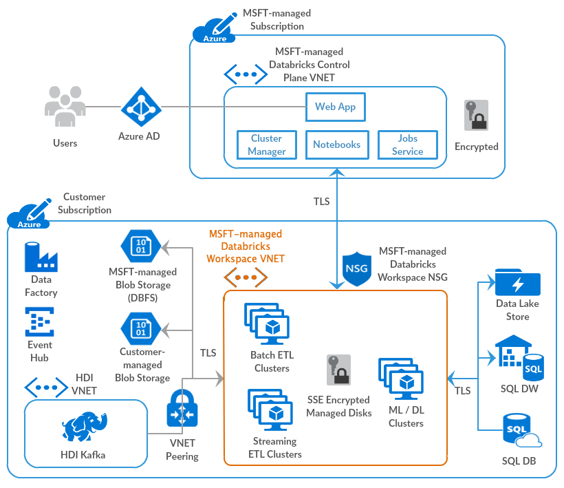

Databricks 101 🧱¶
The Databricks Runtime includes additional optimizations and proprietary features that build upon and extend Apache Spark, including Photon which is an optimized version of Apache Spark rewritten in C++ using vectorized query processing.
Spark Context
You don’t need to worry about configuring or initializing a Spark context or Spark session, as these are managed for you by Databricks.
Architecture¶
Databricks operates out of a control plane and a data plane.

Control Plane¶
The control plane includes the backend services that Azure Databricks manages in its own Azure account. Notebook commands and many other workspace configurations are stored in the control plane and encrypted at rest.
Data Plane¶
Your Azure account manages the data plane, and is where your data resides. This is also where data is processed
- Job results reside in storage in your account.
Interactive notebook resultsare stored in a combination of the control plane (partial results for presentation in the UI) and your Azure storage. If you want interactive notebook results stored only in your cloud account storage, you can ask your Databricks representative to enable interactive notebook results in the customer account for your workspace.
Spark Concepts¶
DataFrame and RDD¶
Tldr
A DataFrame is a two-dimensional labeled data structure with columns of potentially different types. You can think of a DataFrame like a spreadsheet, a SQL table, or a dictionary of series objects. Apache Spark DataFrames provide a rich set of functions (select columns, filter, join, aggregate) that allow you to solve common data analysis problems efficiently.
Apache Spark DataFrames are an abstraction built on top of Resilient Distributed Datasets (RDDs).
Use of Lazy loading in Spark Dataframe instead of Pandas
One of the key differences between Pandas and Spark dataframes is eager versus lazy execution. In PySpark, operations are delayed until a result is actually requested in the pipeline. For example, you can specify operations for loading a data set from Amazon S3 and applying a number of transformations to the dataframe, but these operations won’t be applied immediately. Instead, a graph of transformations is recorded, and once the data are actually needed, for example when writing the results back to S3, then the transformations are applied as a single pipeline operation. This approach is used to avoid pulling the full dataframe into memory, and enables more effective processing across a cluster of machines.
Spark SQL¶
The term Spark SQL technically applies to all operations that use Spark DataFrames. Spark SQL replaced the Spark RDD API in Spark 2.x, introducing support for SQL queries and the DataFrame API for Python, Scala, R, and Java.
PySpark¶
PySpark is the Python API for Apache Spark, an open source, distributed computing framework and set of libraries for real-time, large-scale data processing.
Databricks Concepts¶
Databricks File System (DBFS)¶
A filesystem abstraction layer over a blob store. It contains directories, which can contain files (data files, libraries, and images), and other directories. DBFS is automatically populated with some datasets that you can use to learn Azure Databricks.
DBFS is an abstraction on top of scalable object storage that maps Unix-like filesystem calls to native cloud storage API calls.
Mount blob to DBFS¶
Mounting object storage to DBFS allows you to access objects in object storage as if they were on the local file system. Mounts store Hadoop configurations necessary for accessing storage, so you do not need to specify these settings in code or during cluster configuration.
DBFS root¶
The DBFS root is the default storage location for a Databricks workspace, provisioned as part of workspace creation in the cloud account containing the Databricks workspace
It is important to differentiate that DBFS is a file system used for interacting with data in cloud object storage, and the DBFS root is a cloud object storage location.
Auto Loader¶
Tldr
Auto Loader incrementally and efficiently processes new data files as they arrive in cloud storage without any additional setup.
Auto Loader incrementally and efficiently processes new data files as they arrive in cloud storage. Auto Loader can load data files from
- AWS S3
(s3://) - Azure Data Lake Storage Gen2 (ADLS Gen2,
abfss://) - Google Cloud Storage (GCS,
gs://) - Azure Blob Storage (
wasbs://) - ADLS Gen1 (
adl://) - Databricks File System (DBFS,
dbfs:/)
Auto Loader can ingest JSON, CSV, PARQUET, AVRO, ORC, TEXT, and BINARYFILE file formats.
How does Auto Loader track ingestion progress?
As files are discovered, their metadata is persisted in a scalable key-value store (RocksDB) in the checkpoint location of your Auto Loader pipeline. This key-value store ensures that data is processed exactly once.
Delta Lake¶
Delta Lake is open source software that extends Parquet data files with a file-based transaction log for ACID transactions and scalable metadata handling.
Delta Lake is fully compatible with Apache Spark APIs, and was developed for tight integration with Structured Streaming, allowing you to easily use a single copy of data for both batch and streaming operations and providing incremental processing at scale.
Who created delta lake format?
Delta Lake is the default storage format for all operations on Databricks. Unless otherwise specified, all tables on Databricks are Delta tables. Databricks originally developed the Delta Lake protocol and continues to actively contribute to the open source project.
Connecting to blob and ADLS¶
We can use the Azure Blob Filesystem driver (ABFS) to connect to Azure Blob Storage and Azure Data Lake Storage (ADLS) Gen2 from Databricks
The connection can be scoped to either 1. Databricks cluster 2. Databricks Notebook
ABFS vs WASB
The legacy Windows Azure Storage Blobdriver (WASB) has been deprecated. ABFS has numerous benefits over WASB.
Credentials walkthrough
When you enable Azure Data Lake Storage credential passthrough for your cluster, commands that you run on that cluster can read and write data in Azure Data Lake Storage without requiring you to configure service principal credentials for access to storage. Azure Data Lake Storage credential passthrough is supported with Azure Data Lake Storage Gen1 and Gen2 only. Azure Blob storage does not support credential passthrough.
Delta table¶
A Delta table stores data as a directory of files on cloud object storage and registers table metadata to the metastore within a catalog and schema.
Hive metastore¶
The component that stores all the structure information of the various tables and partitions in the data warehouse including column and column type information, the serializers and deserializers necessary to read and write data, and the corresponding files where the data is stored.
Delta live tables¶
Instead of defining your data pipelines using a series of separate Apache Spark tasks, Delta Live Tables manages how your data is transformed based on a target schema you define for each processing step.
You can also enforce data quality with Delta Live Tables expectations. Expectations allow you to define expected data quality and specify how to handle records that fail those expectations.
Authentication and authorization¶
User¶
A unique individual who has access to the system. User identities are represented by email addresses.
Service principal¶
A service identity for use with jobs, automated tools, and systems such as scripts, apps, and CI/CD platforms. Service principals are represented by an application ID.
Group¶
Groups simplify identity management, making it easier to assign access to workspaces, data, and other securable objects. All Databricks identities can be assigned as members of groups.
ACL¶
A list of permissions attached to the workspace, cluster, job, table, or experiment. An ACL specifies which users or system processes are granted access to the objects, as well as what operations are allowed on the assets
PAT¶
An opaque string is used to authenticate to the REST API and by tools in the Databricks integrations to connect to SQL warehouses.
DS & Engineering Space¶
Workspace¶
A workspace is an environment for accessing all of your Azure Databricks assets. A workspace organizes objects (notebooks, libraries, dashboards, and experiments) into folders and provides access to data objects and computational resources.
Notebook¶
A web-based interface to documents that contain runnable commands, visualizations, and narrative text.
Repo¶
A folder whose contents are co-versioned together by syncing them to a remote Git repository.
Databricks Workflow¶
Azure Databricks Workflows orchestrates data processing, machine learning, and analytics pipelines in the Azure Databricks Lakehouse Platform.
Workflows has fully managed orchestration services integrated with the Azure Databricks platform, including Azure Databricks Jobs to run non-interactive code in your Azure Databricks workspace and Delta Live Tables to build reliable and maintainable ETL pipelines.